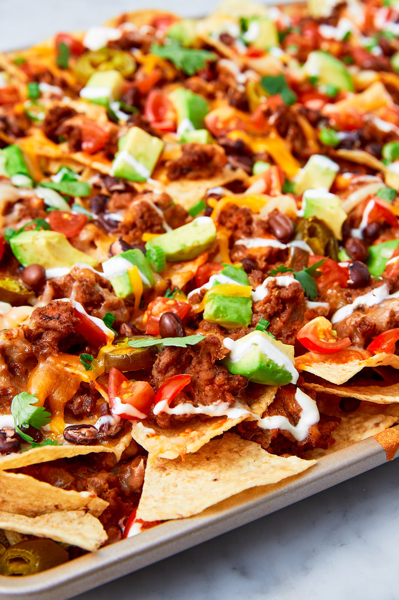

Nachos

Description
This is my favorite recipe for nachos.
Some say you can't make bad nachos but any true nacho-connoisseur
knows there is a right and a wrong way to make these delicious treats.
(Disclaimer - I have not actually tried this nacho recipe - Nachos are
actually very simple and a good nacho is like jazz - built on a solid foundation
but rife with freedom of experimentation. Just don't commit the cardinal sin
of not melting the cheese.)
Ingredients
- kosher salt
- 1 (15-oz.) can refried beans
- 1/4 c. water
- 1 large bag tortilla chips
- 2 c. shredded cheddar
- 2 c. Shredded Monterey jack
- 1 (15-oz.) can black beans, drained
- 1/2 c. pickled jalapeños
- 1 large tomato, diced
- 1 avocado, diced
- 1/4 c. thinly sliced green onions
- 1/4 c. fresh cilantro leaves (optional)
- Sour cream, for drizzling
- Hot sauce, for drizzling
Steps
- Preheat oven to 425º and line a large baking sheet with foil. In a large skillet over medium heat, heat oil. Add onion and cook until soft, 5 minutes, then add ground beef and cook until no longer pink, 6 minutes more. Drain fat.
- Add garlic and taco seasoning and season with salt. Cook until meat is well browned and slightly crispy, 5 minutes more. Add refried beans and water to skillet and stir until combined.
- Add half the tortilla chips and top with beef-bean mixture, half the cheese, half the black beans, and half the pickled jalapeños. Repeat one more layer.
- Bake until cheese is melty, 15 minutes.
- Scatter with tomato, avocado, green onions, and cilantro. Drizzle with sour cream and hot sauce and serve immediately.